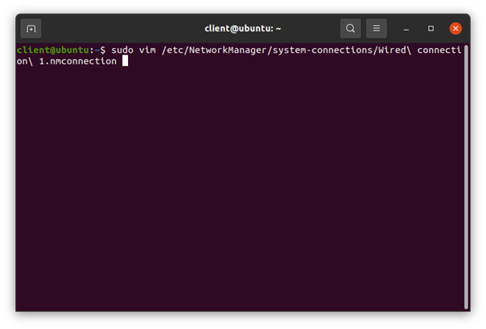

Installation réseau - Configuration client
Configuration réseau d’un client
Windows :
Par défaut Windows devrait reconnaitre le pare-feu comme passerelle.
Nous n’avons donc rien de spécial à configurer.
Linux :
Par défaut Ubuntu n’identifie pas notre pare-feu comme passerelle par défaut pour accéder à internet. Ainsi nous devons la configurer manuellement. Malheureusement, étant donné que nous utilisons le DHCP sur nos machines clients, configurer la passerelle par défaut est légèrement plus compliqué qu’avec le serveur.
Pour se faire nous pouvons utiliser la commande suivante :
ip route add default via [ip_passerelle]Pour éviter ce problème deux solutions existent :
Premièrement vous pouvez automatiser l’exécution de la commande à chaque démarrage du poste de travail via crontab. Vous devrez donc ajouter la commande suivante à votre crontab :
@reboot ip route add default via [ip_passerelle]Nous devons modifier le ficher « /etc/NetworkManager/system-connections/Wired connection 1.nmconnection » pour y indiquer notre nouvelle passerelle par défaut :

Puis nous rajoutons la ligne suivante à la fin de la partie [ipv4] du fichier : « route1=0.0.0.0/0,[ip passerelle],100 »
Après avoir redémarré le poste de travail nous pouvons vérifier que la route a correctement été ajouté grâce à la commande « ip route »
Ici nous remarquons bien la première ligne qui correspond à l’ip de notre pare-feu .